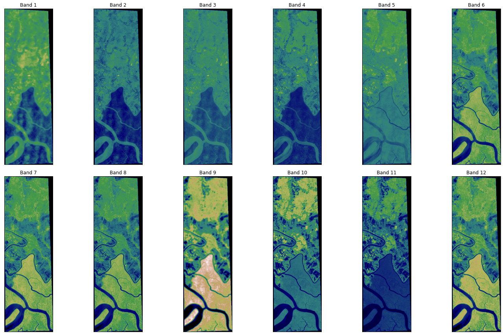
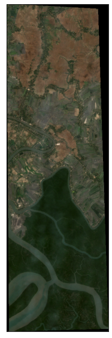
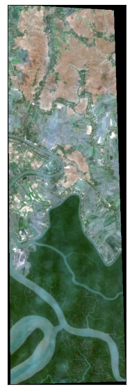
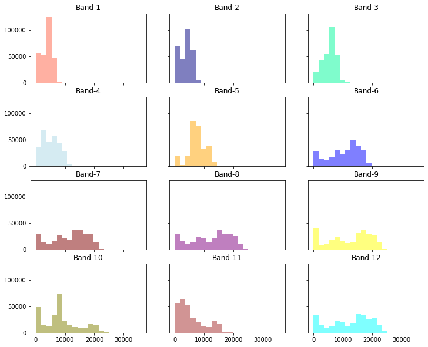
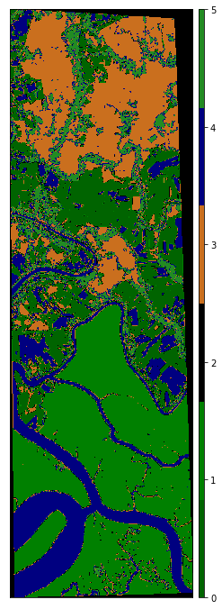

!pip install earthpy gdal10 Land Cover Classification in Satellite Imagery using Python

Import Modules
from glob import glob
import earthpy as et
import earthpy.spatial as es
import earthpy.plot as ep
import rasterio as rio
from rasterio.plot import plotting_extent
from rasterio.plot import show
from rasterio.plot import reshape_as_raster, reshape_as_image
import matplotlib.pyplot as plt
import numpy as np
from matplotlib.colors import ListedColormap
from scipy.io import loadmat
from sklearn.metrics import classification_report, accuracy_score
import plotly.graph_objects as go
np.seterr(divide='ignore', invalid='ignore'){'divide': 'ignore', 'invalid': 'ignore', 'over': 'warn', 'under': 'ignore'}%cd /content/drive/My Drive/Satellite_data/content/drive/My Drive/Satellite_dataRead Data
S_sentinel_bands = glob("/content/drive/MyDrive/Satellite_data/sundarbans_data/*B?*.tiff")
S_sentinel_bands.sort()
S_sentinel_bands['/content/drive/MyDrive/Satellite_data/sundarbans_data/2020-01-27-00_00_2020-01-27-23_59_Sentinel-2_L2A_B01_(Raw).tiff',
'/content/drive/MyDrive/Satellite_data/sundarbans_data/2020-01-27-00_00_2020-01-27-23_59_Sentinel-2_L2A_B02_(Raw).tiff',
'/content/drive/MyDrive/Satellite_data/sundarbans_data/2020-01-27-00_00_2020-01-27-23_59_Sentinel-2_L2A_B03_(Raw).tiff',
'/content/drive/MyDrive/Satellite_data/sundarbans_data/2020-01-27-00_00_2020-01-27-23_59_Sentinel-2_L2A_B04_(Raw).tiff',
'/content/drive/MyDrive/Satellite_data/sundarbans_data/2020-01-27-00_00_2020-01-27-23_59_Sentinel-2_L2A_B05_(Raw).tiff',
'/content/drive/MyDrive/Satellite_data/sundarbans_data/2020-01-27-00_00_2020-01-27-23_59_Sentinel-2_L2A_B06_(Raw).tiff',
'/content/drive/MyDrive/Satellite_data/sundarbans_data/2020-01-27-00_00_2020-01-27-23_59_Sentinel-2_L2A_B07_(Raw).tiff',
'/content/drive/MyDrive/Satellite_data/sundarbans_data/2020-01-27-00_00_2020-01-27-23_59_Sentinel-2_L2A_B08_(Raw).tiff',
'/content/drive/MyDrive/Satellite_data/sundarbans_data/2020-01-27-00_00_2020-01-27-23_59_Sentinel-2_L2A_B09_(Raw).tiff',
'/content/drive/MyDrive/Satellite_data/sundarbans_data/2020-01-27-00_00_2020-01-27-23_59_Sentinel-2_L2A_B11_(Raw).tiff',
'/content/drive/MyDrive/Satellite_data/sundarbans_data/2020-01-27-00_00_2020-01-27-23_59_Sentinel-2_L2A_B12_(Raw).tiff',
'/content/drive/MyDrive/Satellite_data/sundarbans_data/2020-01-27-00_00_2020-01-27-23_59_Sentinel-2_L2A_B8A_(Raw).tiff']l = []
for i in S_sentinel_bands:
with rio.open(i, 'r') as f:
l.append(f.read(1))arr_st = np.stack(l)print(f'Height: {arr_st.shape[1]}\nWidth: {arr_st.shape[2]}\nBands: {arr_st.shape[0]}')Height: 954
Width: 298
Bands: 12Visualize Data
Bands
ep.plot_bands(arr_st, cmap = 'gist_earth', figsize = (20, 12), cols = 6, cbar = False)
plt.show()
RGB Composite Image
rgb = ep.plot_rgb(arr_st,
rgb=(3,2,1),
figsize=(8, 10),
# title='RGB Composite Image'
)
plt.show()
ep.plot_rgb(
arr_st,
rgb=(3, 2, 1),
stretch=True,
str_clip=0.2,
figsize=(8, 10),
# title="RGB Composite Image with Stretch Applied",
)
plt.show()
Data Distribution of Bands
colors = ['tomato', 'navy', 'MediumSpringGreen', 'lightblue', 'orange', 'blue',
'maroon', 'purple', 'yellow', 'olive', 'brown', 'cyan']
ep.hist(arr_st,
colors = colors,
title=[f'Band-{i}' for i in range(1, 13)],
cols=3,
alpha=0.5,
figsize = (12, 10)
)
plt.show()
Preprocessing
x = np.moveaxis(arr_st, 0, -1)
x.shape(954, 298, 12)from sklearn.preprocessing import StandardScaler
X_data = x.reshape(-1, 12)
scaler = StandardScaler().fit(X_data)
X_scaled = scaler.transform(X_data)
X_scaled.shape(284292, 12)y_data = loadmat('Sundarbands_gt.mat')['gt']
y_data.shape(954, 298)# Visualize Groundtruth
ep.plot_bands(y_data, cmap=ListedColormap(['darkgreen', 'green', 'black', '#CA6F1E', 'navy', 'forestgreen']))
plt.show()Train Test Split
from sklearn.model_selection import train_test_split
X_train, X_test, y_train, y_test = train_test_split(X_scaled, y_data.ravel(), test_size=0.30, stratify = y_data.ravel())
print(f'X_train Shape: {X_train.shape}\nX_test Shape: {X_test.shape}\ny_train Shape: {y_train.shape}\ny_test Shape:{y_test.shape}')X_train Shape: (199004, 12)
X_test Shape: (85288, 12)
y_train Shape: (199004,)
y_test Shape:(85288,)K-Nearest Neighbor Classifier (K-NNC)
from sklearn.neighbors import KNeighborsClassifier
knn = KNeighborsClassifier(n_neighbors=6)
knn.fit(X_train, y_train)
knn_pred = knn.predict(X_test)print(f"Accuracy: {accuracy_score(y_test, knn_pred)*100}")Accuracy: 98.9482693931151print(classification_report(y_test, knn_pred)) precision recall f1-score support
0 0.98 0.99 0.98 16222
1 1.00 1.00 1.00 23570
2 1.00 1.00 1.00 6095
3 0.99 0.99 0.99 16790
4 0.99 0.99 0.99 13545
5 0.98 0.95 0.97 9066
accuracy 0.99 85288
macro avg 0.99 0.99 0.99 85288
weighted avg 0.99 0.99 0.99 85288
# Visualize Classification Map of K-NNC
ep.plot_bands(knn.predict(X_scaled).reshape((954, 298)),
cmap=ListedColormap(['darkgreen', 'green', 'black',
'#CA6F1E', 'navy', 'forestgreen']))
plt.show()
Support Vector Machine (SVM)
from sklearn.svm import SVC
svm = SVC(C=3.0, kernel='rbf', degree=6, cache_size=1024)
svm.fit(X_train, y_train)SVC(C=3.0, break_ties=False, cache_size=1024, class_weight=None, coef0=0.0,
decision_function_shape='ovr', degree=6, gamma='scale', kernel='rbf',
max_iter=-1, probability=False, random_state=None, shrinking=True,
tol=0.001, verbose=False)svm_pred = svm.predict(X_test)print(f"Accuracy: {accuracy_score(y_test, svm_pred)*100}")Accuracy: 99.88275021104963print(classification_report(y_test, svm_pred)) precision recall f1-score support
0 1.00 1.00 1.00 16222
1 1.00 1.00 1.00 23570
2 1.00 1.00 1.00 6095
3 1.00 1.00 1.00 16790
4 1.00 1.00 1.00 13545
5 1.00 1.00 1.00 9066
accuracy 1.00 85288
macro avg 1.00 1.00 1.00 85288
weighted avg 1.00 1.00 1.00 85288
# Visualize Classification Map of SVM
ep.plot_bands(svm.predict(X_scaled).reshape((954, 298)),
cmap=ListedColormap(['darkgreen', 'green', 'black',
'#CA6F1E', 'navy', 'forestgreen']))
plt.show()Light BGM
import lightgbm as lgb
d_train = lgb.Dataset(X_train, label=y_train)
params={}
params['learning_rate']=0.03
params['boosting_type']='gbdt' #GradientBoostingDecisionTree
params['objective']='multiclass' #Multi-class target feature
params['metric']='multi_logloss' #metric for multi-class
params['max_depth']=15
params['num_class']=6 #no.of unique values in the target class not inclusive of the end value
clf = lgb.train(params, d_train, 100)lgb_predictions = clf.predict(X_test)print(lgb_predictions[1], np.argmax(lgb_predictions[1]))[0.01326435 0.94884509 0.00530647 0.01346382 0.01118449 0.00793578] 1# lbg_pred = [np.argmax(x) for x in lgb_predictions]
# np.array(lbg_pred).shape
lgb_pred = np.argmax(lgb_predictions, axis=1)
lgb_pred.shape(85288,)print(f"Accuracy: {accuracy_score(y_test, lgb_pred)*100}")Accuracy: 98.55196510646282print(classification_report(y_test, lgb_pred)) precision recall f1-score support
0 0.98 0.98 0.98 16222
1 1.00 0.99 0.99 23570
2 1.00 1.00 1.00 6095
3 0.99 0.99 0.99 16790
4 0.99 0.99 0.99 13545
5 0.95 0.95 0.95 9066
accuracy 0.99 85288
macro avg 0.98 0.98 0.98 85288
weighted avg 0.99 0.99 0.99 85288
# Visualize Classification Map of LightGBM
ep.plot_bands(np.argmax(clf.predict(X_scaled), axis=1).reshape((954, 298)),
cmap=ListedColormap(['darkgreen', 'green', 'black',
'#CA6F1E', 'navy', 'forestgreen']))
plt.show()